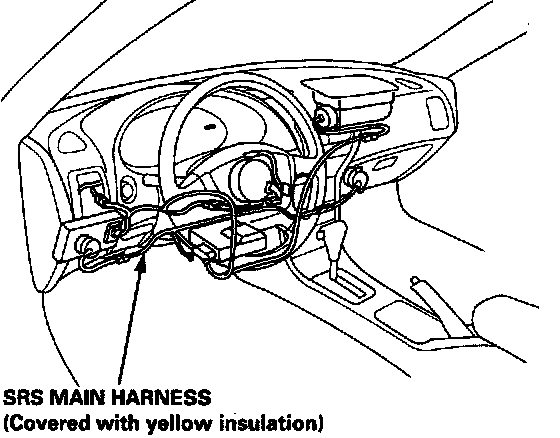
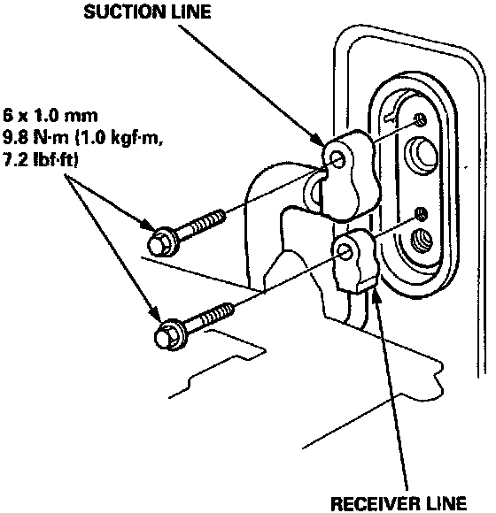
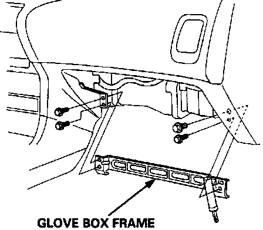
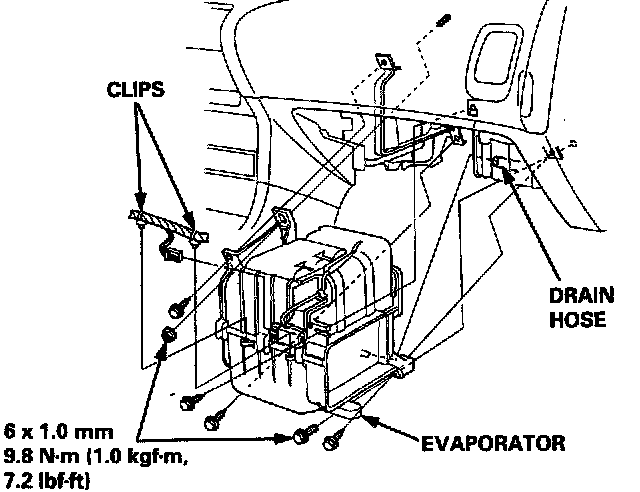

Heater-Evaporator Unit Replacement
Replacement
CAUTION:
^ All SRS electrical wiring harnesses are covered with yellow insulation.
^ Before disconnecting any part of the SRS wire harness, connect the short connector(s).
^ Replace the entire affected SRS harness assembly if it has an open circuit or damaged wiring.
1. Recover the refrigerant with a Recovery/Recycling/Charging System.

2. Remove the bolts, and disconnect the receiver line and the suction line from the evaporator.
NOTE: Plug or cap the lines immediately after disconnecting to avoid moisture and dust contamination into the system.
3. Remove the glove box.

4. Remove the four bolts and the glove box frame.
5. Disconnect the connector from the NC thermostat, and remove the wire harness clips from the evaporator.
6. Remove the four self-tapping screws, mounting bolt and the mounting nut.

7. Disconnect the drain hose, and remove the evaporator.
8. Install in the reverse order of removal, and:
^ if you're installing a new evaporator, add refrigerant oil (ND-OIL 8: P/N 38899 - PR7 - AO1).
^ replace the 0-rings with new ones at each fitting, and apply a thin coat of refrigerant oil (ND-OIL 8: P/N 38899 - PR7 - AO1) before installing them.
NOTE: Be sure to use the right 0-rings for HFC-134a (R-134a) to avoid leakage.
^ apply sealant to the grommets.
^ make sure that there is no air leakage.
^ charge the system and test it's performance.